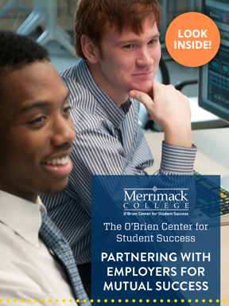
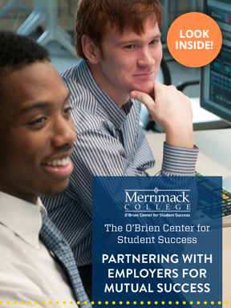
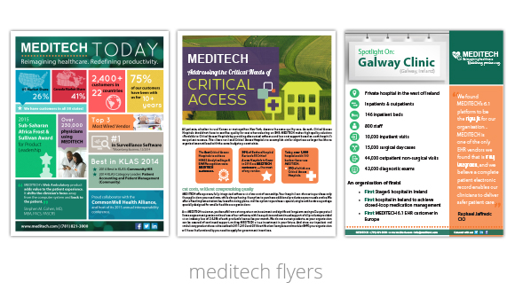
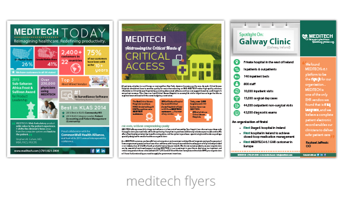
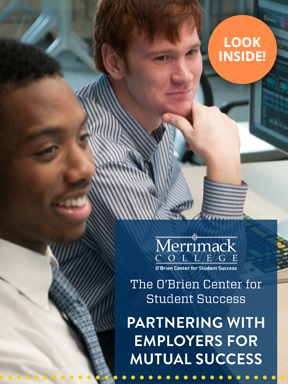
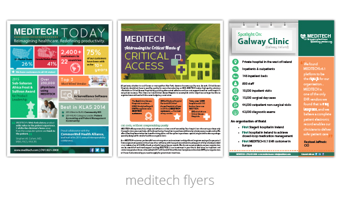

Portfolio
 



 



About
In the classic computer game, The Sims, a character can stand in front of a mirror for an hour and gain charisma points. With these points, they are able to talk and influence others at ease. Well. If only it were that easy! No matter how long I talk in the mirror (wait, what?), I still find it hard to speak or write about myself. Instead, I've created a buzzword bio - you know, like all the annoying celebs on Twitter have!
Designer. Realist. List Maker. List Doer. List Crosser-Offer!(?)
Looking for a less sarcastic description of me? Here are a few things that you might want to know if you'd ever like to work with me:
Still want more? Even after that Sims analogy? Awesome!
Portfolio


Kind Words of Reference
"Kathryn is a true asset to MEDITECH's design team. A naturally creative thinker, she can take an idea and run with it, coming up with multiple visual solutions entirely on her own. From presentation graphics, to logos, to complex infographics, Kathryn's fresh approach to design is making a bold impact across MEDITECH as we embrace our new, modern image."
Michael DeMarzo
Supervisor - Graphic Designers, MEDITECH
"Being around Kathryn always put a smile on my face! Her humorous, positive, creative attitude is reflected in her amazing design work. She listens to the customer's needs, visualizes, and creates masterpieces with sometimes little to no information to go on. A branding goddess!"
Dr. Heather Maietta
Career in Progress, ReacHIRE
kamar design | Kathryn Mariano | kathGmariano@gmail.com | (781) 258-2078